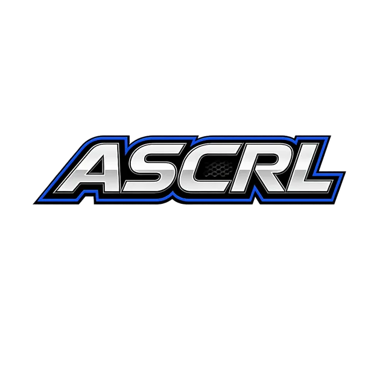

The regular season
Cup, ORAP, and Truck racing are ahead. Follow league announcements for the confirmed regular-season calendar and entry details.
Explore regular-season formats ↗NOW RACING · 2027 PRESEASON THUNDER
Preseason is underway. Come race with us.
A new chapter is on the grid. Meet the drivers, find your race, and be part of ASCRL as we build toward the 2027 regular season. Drivers of all speeds are welcome.
New here? Start in Discord. We’ll help you find your place on the grid.
You do not have to be the fastest. Bring respect for the grid and a love of racing.
Meet the league and let us know you want to race.
JOIN ASCRL ↗02 / GET READYRead the sporting code, race settings, and what to expect on race night.
READ THE RULES ↗03 / GET ON TRACKFollow the preseason calendar and Discord announcements for race entry.
FIND A RACE ↗Qualifying 9:00 PM EST · Green flag 9:15 PM EST · Check Discord for event-specific announcements.
Loading the current preseason standings…
Loading the latest preseason results…
2026–2027 Preseason
Official driver ratings from the ASCRL race results posted in Discord.
Loading power rankings…
Twelve races, different cars, one combined championship. Get to know the league and build your momentum.
FOLLOW PRESEASON ↗Cup, ORAP, and Truck racing are ahead. Follow league announcements for the confirmed regular-season calendar and entry details.
Explore regular-season formats ↗Past seasons, champions, and the Cup tournament live in the ASCRL record book. Driver cards keep their racing history.
Every race is a chance to make a name. Join the American Stock Car Racing League and be part of the next chapter.
JOIN THE DISCORD ↗